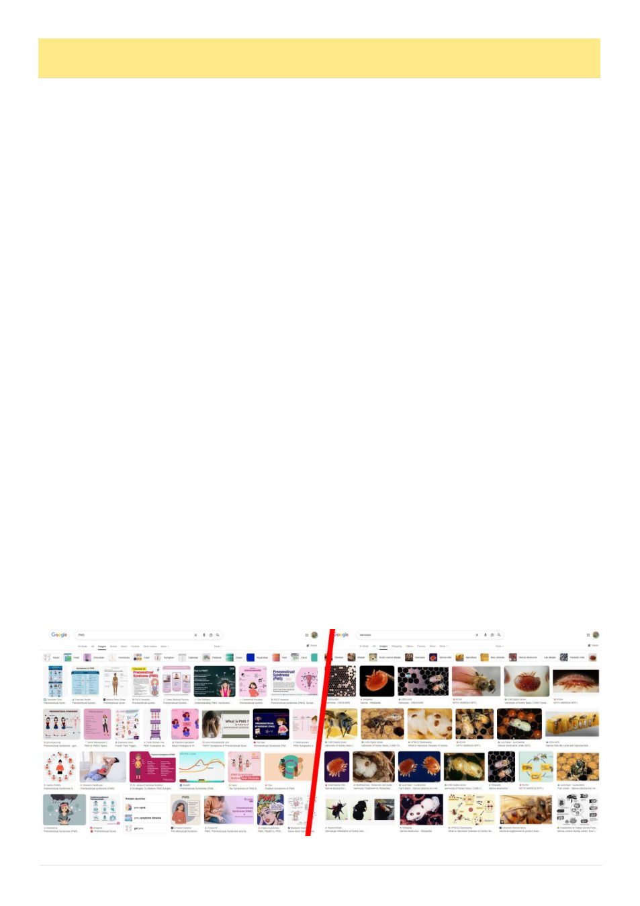

14
Australian Bee Journal
Varroosis
By Kris Fricke
What do you think when you hear the term PMS?
What if your friend tells you, as you catch him get-
ting out of his bee truck looking harried, “ah, mate, the
girls have PMS”?
“Parasitic Mite Syndrome” was coined in the United
States in 1994 when both tracheal and varroa mites
were causing similar symptoms, and the USDA Bee
Research Laboratory in Beltsville, Maryland, was un-
sure which mite was causing the damage:
Beekeepers in the United States have been forced
to adjust their bee disease management systems ever
since the parasitic mites Acarapis woodi and Varroa
[destructor] were discovered there in 1984 and
1987, respectively. The impact of both of these
mites has been devastating […] In addition to re-
ports of field observations, the Bee Research Labor-
atory (BRL) has seen an increase in the number of
bee disease samples that we in the Laboratory have
chosen to call the "parasitic mite syndrome." It is
quite likely that this syndrome is similar to that re-
ported by Ball (1988) in which she refers to the con-
dition as a "secondary infection" in colonies infested
with V. [destructor]. The purpose of this report is to
heighten the awareness of beekeepers, regulators,
and research scientists to this syndrome. It is our
desire that this report will encourage others who
have made similar observations to share their
knowledge so that together we can identify the possi-
ble causes.1
However, for varroa-specific damage, the more pre-
cise term varroosis (pronounced like varroa with “sis”
on the end) was officially adopted by the World Organ-
ization for Animal Health in 1989.2,3 This term is im-
mediately and intuitively clear – even if you’ve never
heard of “varroosis,” if someone says their hive has
varroosis you’d know immediately what they’re talking
about. Compare that to if someone not up on their var-
roa reading hears someone say their hive has PMS.
While Parasitic Mite Syndrome has come to mostly
be used in the context of varroa mite damage, if we
were to have tracheal or Tropilaelaps mites arrive on
our shores, and we wanted to discuss symptoms specif-
ic to them, we would now find that we have unfortu-
nately gotten used to using a term that already generi-
cally refers to all types of mite damage ambiguously.
In addition to varroosis being more official and pre-
cise, PMS, as you will be aware, is already the univer-
sally recognized acronym for a condition affecting
nearly half of all adult humans.4 Acronyms should be
unique, that’s the idea: you say GST, someone knows
what you’re talking about; you say HIV, someone
knows what you mean. You say PMS, well, that re-
quires context to get to this meaning rather than the
more conventional meaning. Yes, the context is usually
clear, but it’s an unnecessary distraction. One would
probably avoid saying the example sentence I gave at
the top of this editorial for exactly the reason that it
could be misunderstood, and a word that has to be care-
fully framed is certainly less ideal than one that doesn’t.
Notably the original article introducing “Parasitic
Mite Syndrome” never shortened the three words to the
acronym “PMS.” A year later in a follow up paper
they used “BPMS,”5 no doubt realizing exactly the ac-
ronym problems I am now writing about. But even this
solution isn’t great, as verbally that just sounds like
“bee PMS,” implying the bees are suffering from the
reproductive syndrome, which, needless to say, they do
not experience.6
And there’s a practical consequence to this: can
you or I google “PMS” and expect varroa management
advice? No, we certainly cannot. Instead, standing in
the field we can type all 23 characters of the full phrase
into our phone, or, more likely, we’re typing in
“varroa” anyway and if we adopted “varroosis” it
would autocomplete by the fourth letter.
Here in Australia with the varroa journey just begin-
ning for most beekeepers, we have a chance to break
with the inaccurate folksy term coined as a research
shorthand for an unknown syndrome in America in
1994, a term that is imprecise, unofficial, and already
loaded with an overwhelmingly more recognized mean-
(Continued on page 15)
A simple google search for "PMS" (left) vs "Varroosis" (right)